带权最小生成树 链接到标题
如果要在 n 个城市之间建立通信网络，n 个城市之间最多有 n(n-1)/2 条道路，如何选择线路连通所有的城市，并且为了节省成本，要使连通的线路距离最短，假设有如下城市：
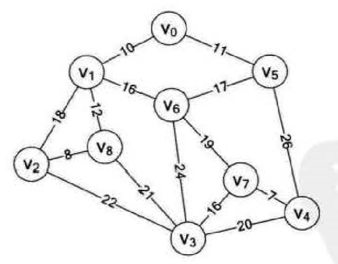
图中有 9 个城市{$v_0,v_1,v_2…v_8$}，图中各顶点之间的连线为此地的所有铺设的道路，现在要从这些道路中选择距离最短的线路，以便可以连通所有的城市，那么有如下三种选择。
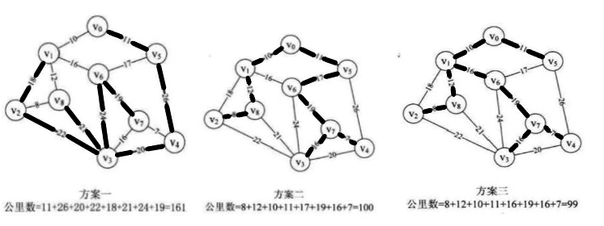
这三种线路的距离各不一样，而方案三要比方案一的线路节省 62 公里的线路成本，如何选择一个最优的线路，也就是我们需要解决的问题。 对于 n 个顶点的连通网可以建立许多不同的生成树，每棵生成树都可以是一个通信网，最合理的通信网应该是代价之和最小的生成树，在一个连通网的所有生成树中，各边的代价之和最小的那棵生成树称为该连通网的最小生成树。 对于寻找连通图的最小生成树，一般有两种算法，普里姆算法和克鲁斯卡尔算法。
普里姆算法 链接到标题
普里姆算法的构造过程 链接到标题
设 G=(V, E) 是连通图，TE 是 N 上最小生成树中边的集合。
构造步骤：
- 初始化:
$U=\{u_0\}(u_0 \in V), TE=\{\}$ - 在所有
$u \in U, v \in V-U$的边$(u,v) \in E$中找到一条权值最小的边$(u_0,v_0)$并入集合 TE，同时$v_0$并入 U。 - 重复过程二，直至 U=V 为止，此时 TE 中必有 n-1 条边，则 T=(V,TE)为 N 的最小生成树。
普里姆算法举例 链接到标题
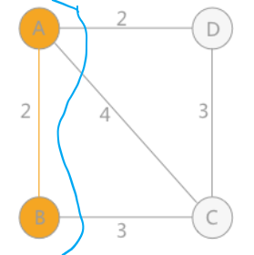
如上图所示，例如从 A 点出发，A-B 权值为 2，A-C 权值为 4，A-D 权值为 2，选择最小的边则选择 A-B，将 A-B 看作一个整体，选择 A-D、A-C、B-C 中权值最小的边 A-D。
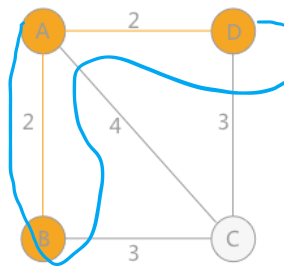
然后将 A-B-D 看作一个整体，继续选择 A-C、B-C、D-C 当中最小的边，直至所有顶点全部选完，这就是普里姆算法的大致思路，此图中有两个最小生成树，如下图所示
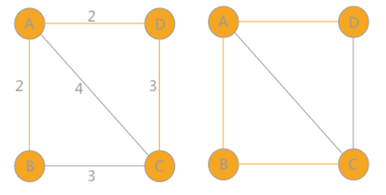
普里姆算法的实现 链接到标题
假设无向图 G 以邻接矩阵存储，从顶点 u 出发构造 G 的最小生成树 T，要求输出 T 的各条边，为了实现此算法需要附设一个辅助数组 closedge，用于记录 U 到 V-U 具有最小权值的边，每个顶点 vi∈V−U，在辅助数组中存在一个相应分量 closedge[i-1]，它包括两个域，lowcost 与 adjvex，lowcost 存储最小边上的权值，adjvex 存储最小边在 U 中的顶点。
closedge 数组结构如下
struct{
VerTexType adjvex; //最小边在U中的那个顶点
ArcType lowcost; //最小边的权值
}closedge[MVNum];
算法描述 链接到标题
-
首先将初始顶点 u 加入 U 中，对其余的每一个顶点
$v_j$，将 closedge[j]均初始化为到 u 的边信息。 -
循环 n-1 次，进行以下操作
- 从各组边 closedge 中选出最小边 closedge[k]，输出此边
- 将 k 加入 U 中
- 更新剩余的每组最小边信息 closedge[j],对于 V-U 中的各边，新增加了一条从 k 到 j 的边，如果新边的权值比 closedge[j].lowcost 小，则将 closedge[j].lowcost 更新为新边的权值。
算法代码如下
void MiniSpanTree_Prim(AMGraph G,VerTexType u){
k = LocateVex(G,u); //k保存顶点u的下标
for(j=0;j<G.vexnum;j++){
if(j!=k){ //遍历除顶点u外所有顶点
closedge[j] = {u,G.arcs[k][j]};
/* 相当于
closedge[j].adjvex = u; //初始化为起始点
closedge[j].lowcost = G.arcs[k][j] //初始化为起始点到其余各顶点的权值
*/
}
closedge[k].lowcost = 0; //顶点u到自身的权值为0
for(i=1;i<G.vexnum;i++){
k = Min(closedge); //选出最小的边
u0 = closedge[k].adjvex; //最小边的一个顶点
v0 = G.vexs[k]; //最小边的另一个顶点
cout << u0 << v0; //输出该边
closedge[k].lowcost = 0; //并入U集
for(j=0;j<G.vexnum;j++){ //重新选择最小边
if(G.arcs[k][j]<closedge[j].lowcost){
closedge[j] = {G.vexs[k],G.arcs[k][j]}
}
}
}
}
}
算法分析 链接到标题
假设网中有 n 个顶点，初始化 closedge 的循环频度为 n，第二个循环频度为 n-1，第二个循环内有两个循环其一是在 closedge[v].lowcost 中求最小值，频度为 n-1，其二是重新选择最小权值的边频度为 n，所以该算法时间复杂度为$O(n^2)$，此算法适合求稠密网的最小生成树。
克鲁斯卡尔算法 链接到标题
普里姆算法是以某顶点为起点，逐步找各顶点上最小权值的边来构建最小生成树，而克鲁斯卡尔算法是以边为目标去构建的，因此需要使用图的存储结构中的边集数组结构，边集数组结构定义代码如下：
构造过程 链接到标题
克鲁斯卡尔算法的具体思路是： 将所有边按照权值从小到大排序，然后判断这个边会不会与之前选择的边组成回路。如果不会，就可以作为最小生成树的一部分，反之，舍去。
判断是否产生回路的方法为： 在初始状态每个顶点给不同的标记，遍历过程的每条边都有两个顶点，判断这两个顶点是否相等，如果相等说明他们处于一棵树中，如果继续连接就会产生回路。
假设连通网 N=(V,E)，将 N 中的边按权值从小到大的顺序排列。
- 初始状态为只有 n 个顶点而无边的非连通图 T={V，{ }}，图中每个顶点自成一个连通分量。
- 在 E 中选择权值最小的边，若该边依附的顶点落在 T 中不同的连通分量上(即不构成回路)，则将此边加入到 T 中，否则舍去此边而选择下一条权值最小的边。
- 重复过程二，直至 T 中所有顶点都在同一连通分量上为止。
算法步骤 链接到标题
-
将数组 Edge 中的元素按权值从小到大排序
-
依次查看数组 Edge 中的边，循环执行以下操作
- 依次从排序好的数组 Edge 中选出一条边(U1U1,U2U2).
- 在辅助数组 parent 中分别查找 v1v1 和 v2v2 所在的连通分量 vs1vs1 和 vs2vs2，进行判断：
- 如果两者不等，表明所选的两个顶点分属不同的连通分量，输出此边，并合并两个连通分量。
- 如果两者相等，表明所选的两个顶点属于同一连通分量，舍去此边而选择下一条权值最小的边。
算法举例 链接到标题
例如下图所示的网，初始状态下赋予各个顶点不同颜色的标记，对所有边的权值升序排序并进行判断。 首先是**(1,3)**边，由于顶点 1 和 3 标记不同，所以可以构成生成树的一部分，然后遍历所有的顶点，将与顶点 3 标记相同的顶点全部改为顶点 1 的标记.
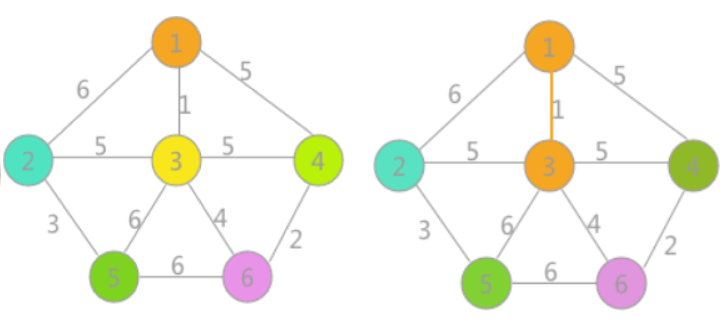
同理**(4,6)边与(2,5)**边也同样可以构成生成树的一部分，连接后更新相应顶点的标记，如下图：

然后最小为**(3,6)**边，两者标记不同，可以连接，遍历所有顶点，将与顶点 6 标记相同的所有顶点标记更改为顶点 1 的标记，如下图所示
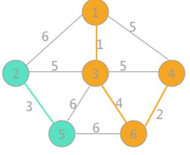
继续选择权值最小的边，此时权值为 5 的边有三个，其中**(1,4)和(3,4)各自两顶点的标记相同，如果连接连接会产生回路，所以舍去。由于(2,3)**标记不同，可以连接，将顶点 2 标记相同的所有顶点的标记改为与顶点 3 相同的标记，当选取的边的数量比顶点数量小 1，说明最小生成树生成。
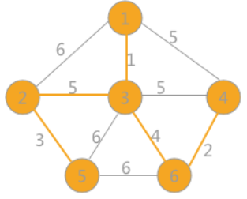
算法描述 链接到标题
int Find(int *parent,int f){ //查找连线顶点的尾部下标
while(parent[f]>0){
f = parent[f];
}
return f;
}
void MiniSpanTree_Kruskal(MGraph G){
int i ,n, m;
Edge edges[MAXEDGE]; //边集数组
int parent[MAXVEX]; //辅助数组用来判断边与边是否形成环路
Sort(edges); //对边集数组升序排序
for(i = 0;i<G.numVertexes;i++){
parent[i] = 0;
}
for(i=0;i<G.numEdges;i++){
n = Find(parent,edges[i].begin);
m = Find(parent,edges[i].end);
if(n != m){
parent[n] = m; //将此边的结尾顶点放入下标为起点的parent中
cout << edges[i].begin << edges[i].end << edges[i].weight << endl;
}
}
}
算法分析 链接到标题
如果对存放在网中的边进行堆排序，对于包含 e 条边的网，上述算法排序时间为$O(elog_2e)$,由此克鲁斯算法的时间复杂度为$O(elog_2e)$，此算法更适合求稀疏网的最小生成树。
最短路径 链接到标题
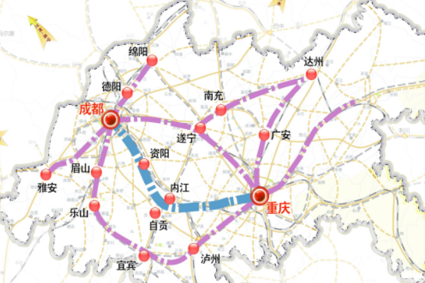
我们在出门旅行时经常会面临选择路线的决策问题，比如从一个城市到另一个城市如何选择线路，或者在城市中从 A 点到 B 点如何乘坐交通工具能够最快到达目的地，我们所讨论的最短路径主要分为两种：
- 对于非网图它没有边上的权值，所谓的最短路径，其实就是指两顶点之间经过的边数最少的路径，只需要从顶点对图做广度优先搜索到终点停止，所得的广度优先生成树上，从根顶点到目的地的路径就是最短路径。
- 对于网图来说，最短路径，是指两顶点之间经过的边上权值之和最少的路径，并且我们称路径上的第一个顶点是源点，最后一个顶点是终点。
- 两种常见的最短路径问题: 求从某个源点到其余各顶点的最短路径、求每一对顶点之间的最短路径
迪杰斯特拉算法 链接到标题
本文讨论单源点的最短路径问题： 给定带权有向图 G 和源点$v_0$，求从$v_0$到 G 中其余各顶点的最短路径。
迪杰斯特拉算法是一个按路径长度递增的次序产生最短路径的算法。
求解过程 链接到标题
对于网 N=(V,E)，将 N 中的顶点分成两组
- S: 已求出的最短路径的终点集合(初始时只包含源点
$v_0$) - V-S: 尚未求出的最短路径的顶点集合(初始时为 V-{
$v_0$})
算法将按各顶点与$v_0$间最短路径长度递增的次序，逐个将集合 V-S 中的顶点加入到集合 S 中，在这个过程中，总保持从$v_0$到集合 S 中各顶点的路径长度始终不大于到集合 V-S 中各顶点的路径长度。
算法实现 链接到标题
假设用带权邻接矩阵 arc 来表示带权有向网 G，G.arcs[i][j]表示弧上的权值，如果不存在，则用一个非常大的数字代表正无穷，算法的实现需要引入以下辅助数据结构：
- 一维数组 S[i]: 记录从源点
$v_0$到终点 v1v1 是否已被确定最短路径长度，true 表示确定，false 表示不确定。 - 一维数组 Path[i]: 记录从源点
$v_0$到终点 vivi 的当前最短路径上 vivi 的直接前驱顶点序号，初值为： 如果从 v0v0 到 v1v1 有弧，则 Path[i]为$v_0$，否则为-1. - 一维数组 D[i]: 记录从源点
$v_0$到终点$v_1$的当前最短路径长度，初值为: 如果从$v_0$到$v_i$有弧，则 D[i]为弧上的权值，否则为无穷大。
长度最短的一条最短路径必为($v_0$,$v_k$)，满足$D[k] = Min\{D[i]|v_i \in V - S\}$
求得顶点$v_k$的最短路径后，将其加入第一组顶点集 S 中，每当加入新顶点到 S，对第二组而言，多了一个
中转顶点，从而多了中转路径，所以要对第二组剩余的各个顶点的最短路径长度进行更新。
原来$v_0$到$v_i$的最短路径长度为 D[i]，加入$v_k$之后，以$v_k$作为中间顶点的中转路径长度为: D[k]+G.arcs[k][i]D[k]+G.arcs[k][i]，若 D[k]+G.arcs[k][i]<D[i]D[k]+G.arcs[k][i]<D[i]，则用 D[k]+G.arc[k][i]D[k]+G.arc[k][i]取代 D[i].
更新后，在选择数组 D 中最小的顶点加入顶点集 S 中，然后重复上述过程，直至图中所有顶点都加入 S 中为止。
算法步骤 链接到标题
-
初始化
- 将源点
$v_0$加入 S 中，即 S[$v_0$]=true. - 将
$v_0$到各个终点的最短路径长度初始化为权值，即$D[i]=G.arcs[v_0][v_i]$. - 如果
$v_0$和顶点$v_i$之间有弧，则将$v_i$的前驱置为$v_0$，即$Path[i]=v_0$，否则$Path[i]=-1.$
- 将源点
-
循环 n-1 次，执行以下操作
- 选择下一条最短路径的终点
$v_k$，使得$D[k] = Min\{D[i]|v_i \in V - S\}$ - 将
$v_k$加入 S 中，即$S[v_k]=true$. - 根据条件更新从
$v_0$出发到集合 V-S 上任一顶点的最短路径的长度，若条件 D[k]+G.arcs[k][i]<D[i]，同时更改$v_i$的前驱为$v_k$，Path[i]=k。
- 选择下一条最短路径的终点
算法举例 链接到标题
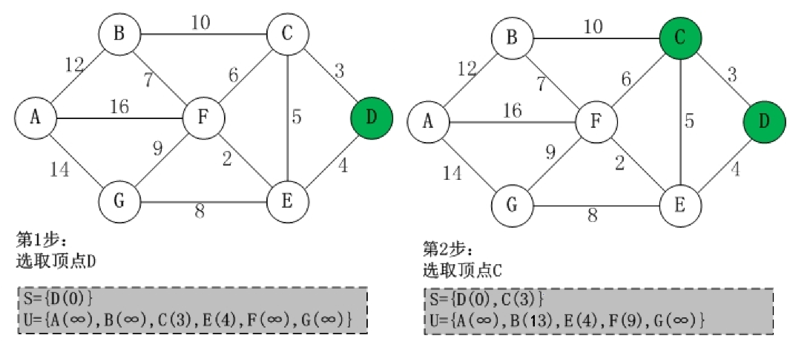
用上图进行举例，首先选取源点 D 并入 S 集中，然后更新从源点 D 到其余各顶点的距离，用 U 数组进行存储，然后在 U 中选取最小权值的顶点(C)并入 S 集中，此时 S 集有 D、C 两个顶点，继续更新 D 到其余各顶点的距离，此时 S 集中有 C 顶点可以作为中转点，所以 D 到 B 的距离可以更新为 13，D-C-E 的距离比 D-E 的距离长，所以 E 的权值不变，F 的距离根据 C 顶点中转，可以算出为 3+6=9.
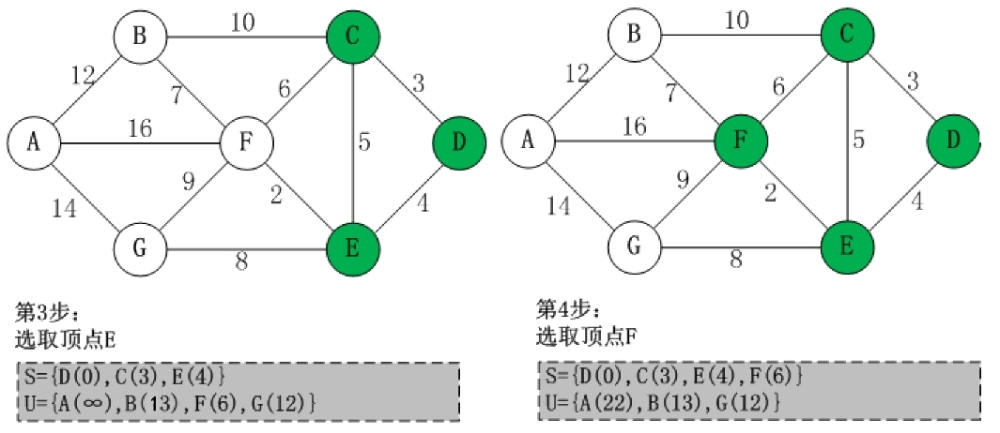
第三步在 S 集中继续选取最小权值的顶点(E)并入 S 集中，然后 E 作为中转点，更新 U 中其余顶点到源点的距离，第四步依然是在 S 集中选取最小权值的顶点(F)并入 S 集中，U 中更新其余顶点到源点的距离。
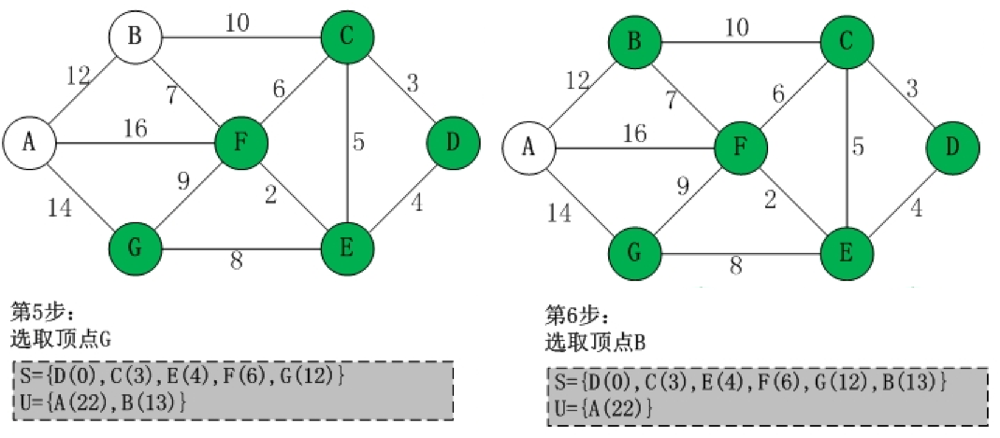
第五步和第六步与以上步骤同理，从 U 中选取权值最小的顶点并入 S 集，然后将此顶点作为中转点，更新源点到其余顶点的距离。
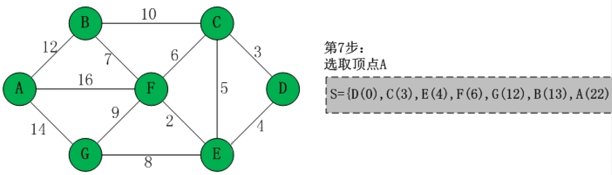
通过以上步骤，U 集中的顶点已经全部并入 S 集，此时源点到其余各顶点的最短路径已经计算完毕。
算法描述 链接到标题
void ShortesPath_DIJ(AMGraph G,int v0){
n = G.vexnum;
for(v=0;v<n;++v){ //对n个顶点初始化
S[v]=false;
D[v]=G.arcs[v0][v]; //记录v0到v的最短路径长度
if(D[v]<MaxInt){ //MaxInt表示正无穷，如果有弧更新Path为v0,否则置为-1
Path[v]=v0;
}
else{
Path[v]=-1;
}
}
S[v0]=true; //将v0加入S
D[v0]=0; //源点到源点的距离为0
//遍历其余顶点，每次求得v0到某个顶点v的最短路径，将v并入S
for(i=1;i<n;++i){
min=MaxInt; //初始化最短路径为无穷大
/*遍历所有结点，如果顶点v0到vw没有确认为最短路径，
并且v0到vw的路径比当前最短路径小，则更新最短路径。*/
for(w=0;w<n;++w){
if(!S[w] && D[w]<min){
v=w; //保存顶点位置
min=D[w];
}
}
S[v]=true; //设置顶点v0到v为确定的最短路径
/*更新从v0出发到集合V-S上所有顶点的最短路径长度*/
for(w=0;w<n;++w){
/*如果没有确认到vw的最短路径，
并且v0到v的最短路径加从v到w的路径之和，
小于当前从v到w的最短路径, 则对其更新*/
if(!S[w] && (D[v]+G.arcs[v][w]<D[w])){
D[w]=D[v]+G.arcs[v][w];
Path[w]=v; //更改w的前驱为v
}
}
}
}
算法分析 链接到标题
主循环一共进行 n-1 次，每次执行时间为 O(n)，所以算法时间复杂度为$O(n^2)$。
人们可能只希望找到从源点到某个终点的最短路径，但这个问题和求源点到其他所有顶点的最短路径一样复杂，所以使用迪杰斯特拉算法解决，时间复杂度依然为$O(n^2)$。
弗洛伊德算法 链接到标题
迪杰斯特拉算法是解决单源点到其余顶点最短路径的问题，如果是求每一对顶点之间的最短路径，用迪杰斯特拉算法就需要将每个顶点都作为源点，然后共同调用 n 次算法，相当于在外层又套了一层循环，这种方式时间复杂度变为$O(n^3)$。
另一种求最短路径的算法是弗洛伊德算法，弗洛伊德算法的时间复杂度依然为$O(n^3)$,但其算法非常简洁优雅，此算法仍然使用带权的邻接矩阵 arcs 来表示有向网 G，求从顶点$v_i$到$v_j$的最短路径.
算法实现 链接到标题
算法实现需要引入以下数组:
- 二维数组 Path[i][j]: 最短路径上顶点
$v_j$的前一顶点的序号。 - 二维数组 D[i][j]: 记录顶点
$v_i$和$v_j$之间的最短路径长度。
算法步骤 链接到标题
将$v_i$到$v_j$的最短路径长度初始化，即 D[i][j]=G.arcs[i][j]，然后进行 n 次比较更新。
- 在
$v_i$和$v_j$间加入中转顶点$v_0$，比较($v_i$,$v_0$,$v_j$)和($v_i$,$v_j$)的路径长度，也就是判断 G.arcs[i][0]+G.arcs[0][j]是否比 G.arcs[i][j]的路径更短，取最短的作为$v_i$到$v_j$的最短路径，同时更新 Path 数组对应的值。 - 循环将
$v_1$,$v_2$…$v_n$都作为中转点，更新$v_i$到$v_j$的最短路径，经过 n 次比较后，就可以得到任意两顶点之间的最短路径。
算法举例 链接到标题
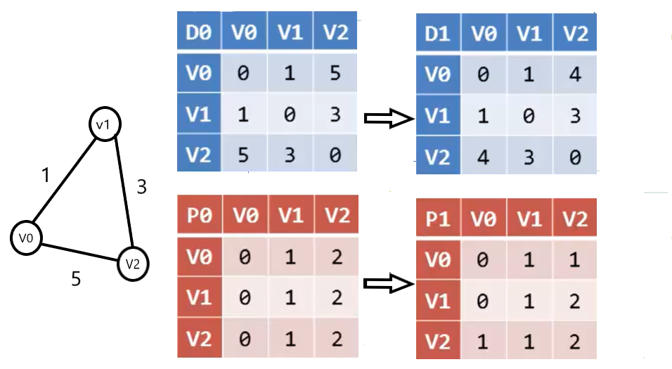
我们先用三个顶点的无向图举例，D0 表示初始的邻接表，P0 记录最短路径上顶点 vjvj 前一个顶点的序号。
我们发现如果用 v1v1 作为中转点，那么(v0,v1)+(v1,v2)=4，比(v0,v2)=5 更小，所以需要更新 D 矩阵的对应值为最短路径的长度，所以更新 D[0][2]=4，由于此图是无向图，因此 D[2][0]=4，由此得到 D1 所对应的矩阵，D 矩阵改变，P 矩阵也需要改变，由于现在 v0 到 v2 的最短路径经过 v1，因此 P[0][2]需要存储 v1 的序号 1，表明 v2 结点的前一顶点是 v1。
接下来如果我们用下面一个较为复杂的图来进行说明，首先还是对 D、P 矩阵进行初始化。
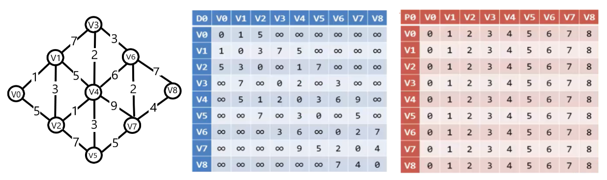
我们依然首先以 v0 作为中转点，发现只有 v1 与 v2 是以 v0 作为中转点的，所以 D、P 矩阵的值不变，接下来我们使用 v1 作为中转点，v3、v4、v2 都可以以 v1 作为中转点，然后更新 D、P 矩阵的对应数据，我们更新以 v1 作为中间结点的数据代码如下：
for(int i=0; i<n; i++) //n为图中顶点的数量
for(int j=0; j<n; j++)
if(D[i][1]+D[1][j]<D[i][j])
D[i][j]=D[i][1]+D[1][j];
那么如果我们需要更新以 vi(i=1,2,3…n)顶点为中间顶点的对应 D 矩阵的数据，只需要将循环中的 1 改为 i 即可，因此需要在外层在进行循环 i，可以得到以下代码：
for(int k=1; k<=n; k++)
for(int i=1; i<=n; i++)
for(int j=1; j<=n; j++)
if(D[i][k]+D[k][j]<D[i][j]){
D[i][j]=D[i][k]+D[k][j];
Path[i][j]=Path[k][j]; //在循环的过程中顺便更新P矩阵的值
}
经过 9 次循环可以得到现在的 D、P 矩阵:
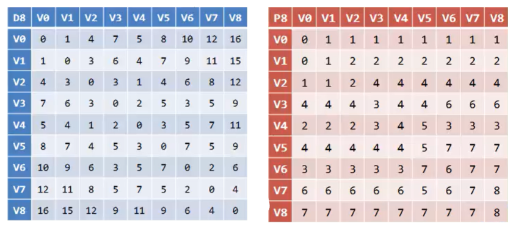
从上图的 D 矩阵可以看出(v0,v8)的最短路径为 16，从 P 矩阵可以看出从(v0,v8)需要经过 v1 中转，然后又从(v1,v8)看出需要经过 v2，从(v2,v8)需要经过 v4，(v4,v8)需要经过 v3，(v3,v8)需要经过 v6，从(v6,v8)需要经过 v7，然后从 v7 可以直接到 v8，那么 v0 到 v8 的最短路径就是 v0−v1−v2−v4−v3−v6−v7−v8，然后我们手动计算此路径长度为 1+3+1+2+3+7=16，和 D 矩阵相应的值一样，这就是弗洛伊德算法的过程。
算法实现 链接到标题
void ShortestPath_Floyd(AMGraph G){
for(i=0;i<G.vexnum;i++){ //初始化矩阵
for(j=0;j<G.vexnum;j++){
D[i][j]=G.arcs[i][j];
if(D[i][j]<MaxInt && i!=j){ //如果i与j之间有弧，则将j的前驱置为i，否则置为-1
Path[i][j]=i;
}
else{
Path[i][j]=-1;
}
}
}
//计算任意两顶点之间最短距离
for(k=0;k<G.vexnum;k++){
for(i=0;i<G.vexnum;i++){
for(j=0;j<G.vexnum;j++){
if(D[i][k]+D[k][i]<D[i][j]){
D[i][j]=D[i][k]+D[k][j]; //更新D[i][j]
Path[i][j]=Path[k][j]; //更改j的前驱为k
}
}
}
}
}
拓扑排序 链接到标题
一个无环的有向图称作有向无环网(Directed Acyline Graph)，简称 DAG 图。 有向无环网是描述工程进行过程的有效工具，一个工程可以被分为若干个称为活动的子工程，子工程之间有约束关系，比如前一个工程完成后才能进行下一个工程，如下图所示：
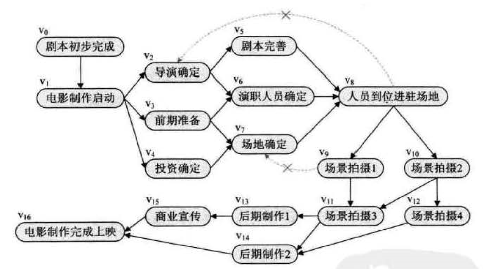
在一个表示工程的有向图中，用顶点表示活动，用弧表示活动之间的优先关系，这样的有向图为顶点表示活动的网，我们称为 AOV 网(Activity On Vertex Network)。
在 AOV 网中，若从顶点 vivi 到顶点 vjvj 有一条有向路径，则 vi 是 vj 的前驱，vj 是 vi 的后继，若 <vi,vj> 是网中的一条弧，则 vi 是 vj 的直接前驱，vj 是 vi 的直接后继。
在 AOV 网中不应该出现有向环 ，因为存在环意味着某项活动应以自己为先决条件，这是矛盾的，对于给定的 AOV 网应该先判断网中是否存在环，检测的方法就是对 AOV 网进行拓扑排序，若网中所有的顶点都在它的拓扑有序序列中，则该 AOV 网中必定不存在环。
拓扑排序就是将 AOV 网中所有顶点排成一个线性序列，该序列满足: 若在 AOV 网中由 vi 到 vj 有一条路径，则在该线性序列中的顶点 vi 必定在 vj 之前.这样的拓扑序列不止一条，例如上面的工程图有如下两个拓扑有序序列：
$$ V0，V1，V2，V3，V4，V5，V6，V7，V8，V9，V10，V11，V12，V13，V14，V15，V16 $$
$$ V0，V1，V4，V3，V2，V7，V6，V5，V8，V10，V9，V12，V11，V14，V13，V15，V16 $$
拓扑序列只要保证前一个结点一定是指向后一个结点，而不指向之前的结点就好。
构造拓扑序列时有两个结果，如果此网的全部顶点都被输出，则说明它是不存在环的 AOV 网，如果输出顶点数少了，就说明这个网存在环，不是 AOV 网。
拓扑排序的过程 链接到标题
- 在有向图中选一个无前驱的顶点且输出它。
- 从图中删除该顶点和所有以它为尾的弧。
- 重复步骤 1 与步骤 2，直至不存在无前驱的顶点。
- 若此时输出的顶点数小于有向图中的顶点数，则说明有向图中存在环，否则输出的顶点为拓扑序列。
以之前的流程图为例，可以构造出以下的 AOV 网：
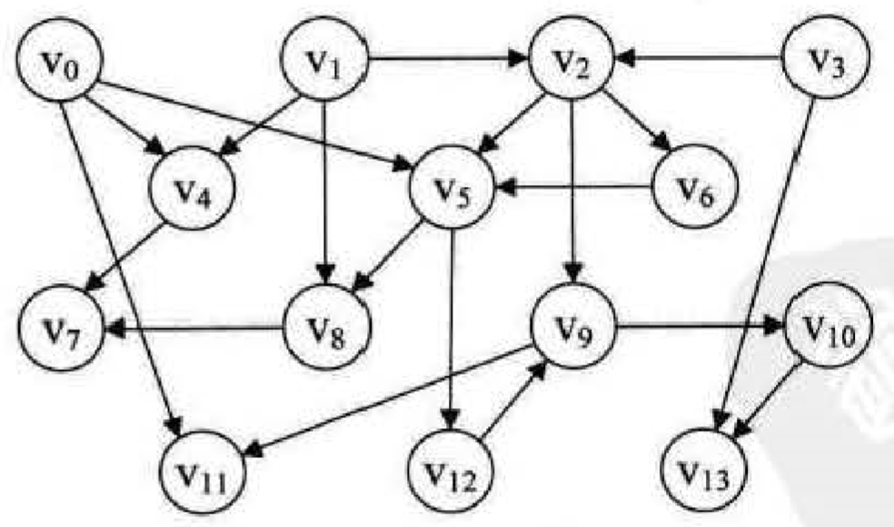
拓扑排序的实现 链接到标题
进行拓扑排序的过程需要删除顶点，所以使用邻接表会更加方便，因此需要为 AOV 网建立一个邻接表，考虑到算法过程需要查找入度为 0 的顶点，所以需要在原顶点表结构中，加入一个入度域 in，结构代码如下所示：
typedef struct EdgeNode{ //边表结点
int adjvex; //邻接点域，存储该顶点对应的下标
int weight; //存储权值
struct EdgeNode *next; //指向下一个邻接点
}EdgeNode;
typedef struct VertexNode{ //顶点表结点
int in; //入度域
int data; //顶点域
EdgeNode *firstedge; //边表头指针
}VertexNode,AdjList[MAXVEX];
typedef struct{
AdjList adjList;
int numVertexes,numEdges; //图中顶点数和边数
}graphAdjList,*GraphAdjList;
在算法中，还需要用栈来处理入度为 0 的顶点，目的是为了避免每个查找时都要遍历顶点表找有没有入度为 0 的顶点。
代码实现 链接到标题
在删除顶点和以它为尾的弧的操作，可以不必真正对图的存储结构进行改变，可用弧头顶点的入度-1 的方式来实现。
Status TopologicalSort(GraphAdjList GL){
EdgeNode *e;
int i,k,gettop;
int top = 0; //栈指针下标
int count = 0; //输出顶点的个数
int *stack; //存入度为0的顶点
stack = (int*)malloc(GL->numVertexes*sizeof(int));
//遍历所有顶点将入度为0的顶点入栈
for(i=0;i->GL->numVertexes;i++){
if(GL->adjList[i].in==0){
stack[++top]=i;
}
}
while(top!=0){
gettop=stack[top--]; //出栈
cout << GL->adjList[gettop].data;
count++; //统计输出顶点数
//遍历此顶点的弧表
for(e=GL->adjList[gettop].firstedge;e;e=e->next){
k=e->adjvex;
if(!(--GL->adjList[k].in)){ //将k号顶点邻接点的入度-1
stack[++top]=k; //如果为入度为0则入栈
}
}
}
if(count < GL->numVertexes) return ERRPR; //如果输出顶点数小于总顶点则说明有环
else return OK;
}
算法分析 链接到标题
对于有 n 个顶点和 e 条边的有向图而言，建立求各顶点入度的时间复杂度为 O(e),建立零入度顶点栈的时间复杂度为 O(n)，所以总的时间复杂度为 O(n+e).
关键路径 链接到标题
在 AOV 网中，我们用顶点表示活动，用弧来表示活动间的优先关系，AOE(Activity On Edge)网与 AOV 网不同，AOE 网用顶点表示事件，用弧来表示活动，权表示活动持续的时间，通常 AOE 网可用来估算工程的完成时间。
在一个工程计划中，通常需要判断哪些活动是影响工程进度的关键，由于现在大多数工程采用流水线管理，对于没有先后关系的子工程可以在同一时间进行，那么进行时间最长的子工程将决定下一个子工程的开始时间，因此将其称为关键活动，关键活动的延期会导致整个项目的延期。
由于整个工程只有一个开始点和一个完成点，正常情况下，网中只有一个入度为零的点，称为源点，也只有一个出度为零的点，称为汇点，如下图所示:
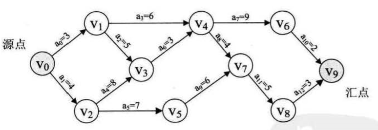
v0 即为源点，表示工程的开始，v9 是汇点，表示工程的结束，顶点 v0,v1,v2,…,v9 分别表示事件，弧 <v0,v1>,<v0,v2>…<vi,vj> 都表示一个活动，用 a0，a1，…，ai 表示，它们的值表示活动持续的时间。
在 AOE 网中，一条路径各弧上的权值之和称为该路径的带权路径长度，要估算整个项目的完成时间，就要找一条从源点到汇点的带权路径长度最长的路径，称为关键路径，关键路径上的活动称为关键活动。
关键路径的确定 链接到标题
为了确定关键路径，需要定义四个描述量:
- 事件的最早发生时间 etv(earliest time of vertex): 即顶点 vk 的最早发送时间
- 事件的最迟发生时间 ltv(latest time of vertex): 即顶点 vk 的最晚发生时间，也就是每个顶点对应的事件最晚需要开始的时间，超出此时间将会延误整个工期。
- 活动的最早开始时间 ete(earliest time of edge): 即弧 ak 的最早发生时间。
- 活动的最晚开始时间 lte(latest time of edge): 即弧 ak 的最晚发生时间，也就是不推迟工期的最晚开工时间。
由 1、2 可以求得 3、4，然后再根据 ete[k]是否与 lte[k]相等来判断 ak 是否是关键活动。
关键路径求解过程 链接到标题
- 对图中顶点进行排序，在排序过程中按拓扑序列求出每个事件的最早发生时间 etv。
- 按逆拓扑序列求出每个事件的最迟发生时间 ltv。
- 求出每个活动的最早开始时间 ete。
- 求出每个活动的最晚开始时间 lte。
- 找出 ete 与 lte 相等的活动，即为关键活动，由关键活动形成的由源点到汇点的每一条路径就是关键路径。
算法实现 链接到标题
-
调用拓扑排序算法，保存拓扑序列到 stack2
-
初始化每个事件的最早发生时间为 0
-
根据 stack2 保存的拓扑序列，按从前向后的拓扑次序，依次求每个事件的最早发生时间，循环执行以下操作
- 取得拓扑序列中的顶点序号 k
- 用指针 p 依次指向 k 的每一个邻接顶点，取得每个邻接顶点的序号 j=p->adjvex，依次更新顶点 j 的最早发生时间
-
将每个事件的最迟发生时间初始化为汇点的最早发生时间
-
根据 stack2 的值按从后向前的逆拓扑次序，依次求每个事件的最迟发生时间，循环执行以下操作
- 取得拓扑序列中顶点序号 k
- 用指针 p 依次指向 k 的每一个邻接顶点，取得每个邻接顶点的序号 j=p->adjvex,依次根据 k 的邻接点，更新 k 的最迟发生时间
-
判断某一活动是否为关键活动，循环 n 次，执行以下操作
- 对每个顶点 i，用指针 p 依次指向 i 的每个邻接顶点，取得每个邻接顶点的序号 j=p->adjvex，分别计算活动的最早和最晚开始时间，如果两者相等，说明活动为关键活动，输出此弧。
算法代码 链接到标题
求事件的最早发生时间 etv 的过程，就是从头至尾找拓扑序列的过程，因此，在求关键路径之前，需要调用一次拓扑序列算法来计算 etv 和拓扑序列列表。
int *etv,*ltv;
int *stack2; //stack2用来存储拓扑序列，以便后面求关键路径时使用。
int top2; //用于stack2的指针
Status TopologicalSort(GraphAdjList GL){
EdgeNode *e;
int i,k,gettop;
int top=0; //用于栈指针下标
int count=0; //用于统计输出顶点的个数
int *stack; //建栈将入度为0的顶点入栈
stack=(int*)malloc(GL->numVertexes*sizeof(int));
//将所有入度为0的顶点入栈
for(i=0; i<Gl->numVertexes; i++){
if(0==GL->adjList[i].in)
stack[++top]=i;
}
//事件最早发生事件全部初始化为0
etv = (int*)malloc(GL->numVertexes*sizeof(int)); //事件最早发生时间
for(i=0;i<GL->numVertexes;i++){
etv[i]=0;
}
top2=0;
stack2 = (int*)malloc(GL->numVertexes*sizeof(int));
while(top !=0 ){
gettop = stack[top--];
count++;
stack2[++top2]=gettop; //这里原先是输出顶点序号，现在改为压入stack2
for(e=GL->adjList[gettop].firstedge;e;e=e->next){
k=e->adjvex;
if(!(--GL->adjList[k].in)){
stack[++top]=k;
}
//求etv数组的每一个元素的值
if((etv[gettop] + e->weight) > etv[k]){
etv[k]=etv[gettop]+e->weight;
}
}
}
if(count < GL->numVertexes) return ERROR;
else return OK;
}
void CriticalPath(GraphAdjList GL){
EdgeNode *e;
int i,gettop,k,j;
int ete,lte; //声明活动最早发生时间和最迟发生时间变量
TopologicalSort(GL); //求拓扑序列，计算数组etv与stack2的值
//初始化ltv(事件最晚发生时间)
ltv = (int*)malloc(GL->numVertexes*sizeof(int));
for(i=0;i<GL->numVertexes;i++){
ltv[i]=etv[Gl->numVertexes-1];
}
//计算ltv
while(top2 ！=0){
gettop = stack2[top2--];
for(e=GL->adjList[gettop].firstedge;e;e=e->next){
k=e->adjvex;
if(ltv[k]-e->weight < ltv[geettop]){
ltv[gettop] = ltv[k]-e->weight;
}
}
}
//求ete，lte和关键活动
for(j=0; j<GL->numVertexes; j++){
for(e = GL->adjList[j].firstedge; e; e=e->next){
k=e->adjvex;
ete=etv[j]; //活动最早发生时间
lte=ltv[k]-e->weight; //活动最迟发生时间
if(ete == lte){ //两者相等，即为关键活动
cout << GL->adjList[j].data << "，" << GL->adjList[k].data << "权值：" << e->weight;
}
}
}
}
算法分析 链接到标题
在求每个事件的最早和最迟发生时间，以及活动的最早最迟开始时间，都要对所有顶点及每个顶点边表中所有结点遍历，因此算法时间复杂度为 O(n+e).